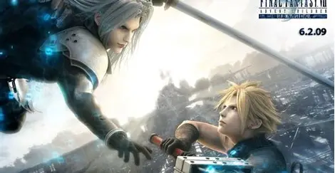
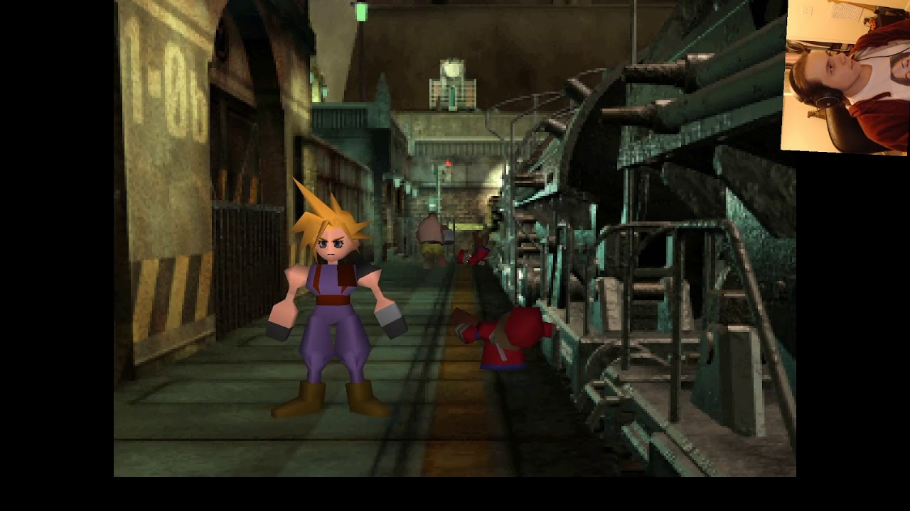
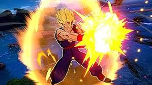
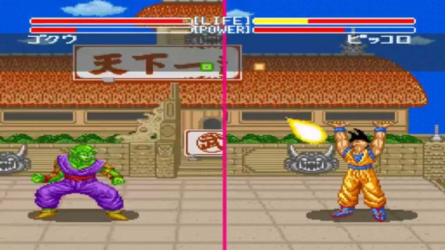
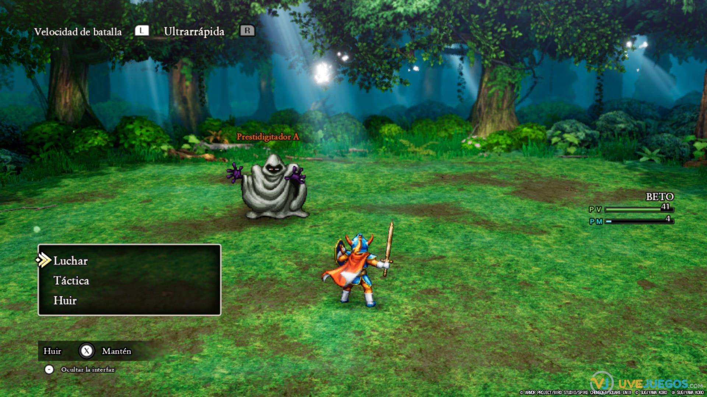
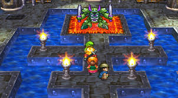

Blog
En este blog analizaremos cómo las grandes compañías tales como Square Enix, Nintendo, Konami, Capcom... están trayendo de vuelta juegos míticos en forma de remasterizaciones y remakes. Estas nuevas versiones buscan respetar el espíritu original mientras se adaptan a las expectativas actuales. Un recorrido entre pasado y presente para los verdaderos amantes del retro.
Como se puede observar en el video anterior, con el paso de los años el aumento de calidad en los remakes respecto a sus versiones originales es bastante notable. No solo se muestran mejoras visuales, de sonido y jugabilidad, sino también el aumento de nivel técnico. En definitiva los remakes se han convertido en una forma de revivir grandes clásicos, adaptandolos a las técnicas modernas sin perder esas cualidades que los hizo sobresalir en su día
Tabla Comparativa Juegos Remake - Retros
Aquí se puede observar una pequeña comparativa entre juegos retros y sus remakes
| Nombre del juego | Imagen remake | Imagen retro |
|---|---|---|
| Final Fantasy VII |  |  |
| Super Mario 64 |  |
 |
| Dragon ball |  |  |
| Dragon Quest |  |  |